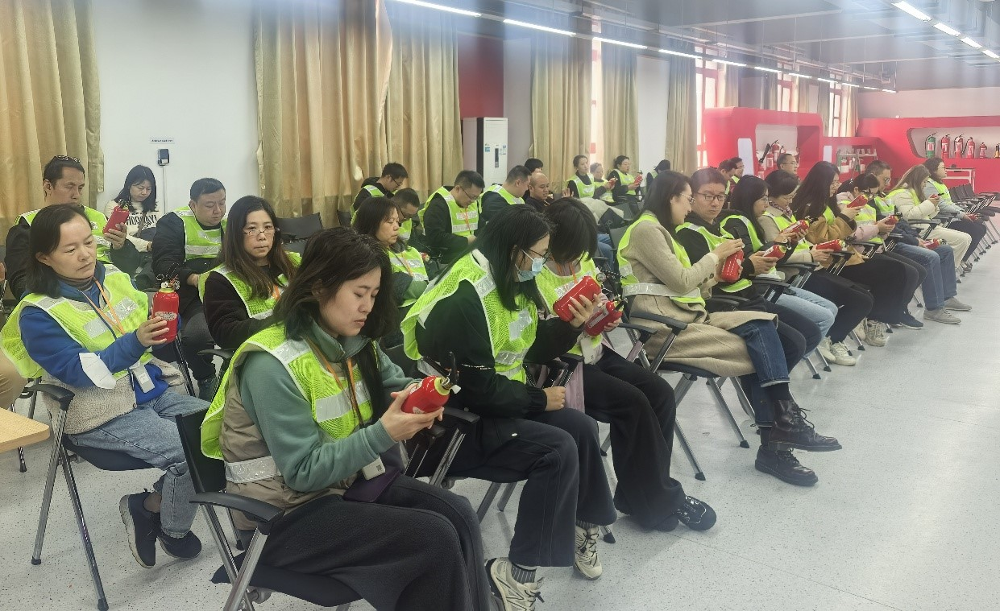

学院通知 · 校园活动
图书馆开展2025年下半年职工消防安全技能培训
发布时间：2025-12-14 10:22:08
图书馆作为全国古籍重点保护单位和学校重点防火单位，为进一步牢固树立安全发展理念，弘扬生命至上、安全第一的思想，切实提升全馆职工消防安全责任意识和消防安全工作能力，按照学校党委保卫部（处）《关于开展2025年四川大学消防宣传月活动的通知》要求，结合图书馆安全工作实际，11月28日和12月11日，图书馆分两批次组织职工赴学校灾后重建与管理学院开展消防安全技能培训。 通过系统开展“常规消防器材的科学普及、常规消防器材的正确操作使用、消防安全疏散逃生演练和消防安全技能测试考核”等四个方面的专业培训，图书馆职工进一步牢固树立了“安全第一、预防为主”的消防安全责任意识，切实提升了“检查消除火灾隐患的能力，组织扑救初起火灾的能力，组织人员疏散逃生的能力和消防宣传教育培训能力”。
